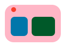
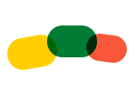
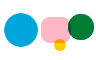

crosslink
You direct. Your agents remember. Nothing gets lost.
Session Memory
Your agents remember everything — handoff notes, breadcrumbs, and session state survive context compression and restarts. Pick up exactly where you left off.
Local-First Tracking
All data lives in a single SQLite file (.crosslink/issues.db). No cloud, no sync complexity, no network requests. Your project state stays on your machine.
Multi-Agent Coordination
Launch multiple agents on the same repo and let them sort it out. Distributed locking via a git coordination branch prevents conflicts automatically.
Behavioral Hooks
Your agents follow the rules without being told. Hooks inject best practices automatically — no stubs, proper error handling, issue tracking enforcement, and language-specific guidelines.
Swarm Orchestration
Point a swarm of agents at a design document. crosslink swarm coordinates phased builds with budget-aware scheduling, phase gates, and checkpoint/resume for interrupted work.
Knowledge Management
Research done by one agent is available to all. Shared markdown knowledge pages synced via git with full-text search, bulk import, and auto-injection into agent context.
Terminal Dashboard
crosslink tui gives you a live view of issues, active agents, knowledge pages, milestones, and config — all in your terminal with mouse support and keyboard navigation.

Web Dashboard
crosslink serve launches a browser-based dashboard for visual project oversight. Same data, richer interface — charts, drag-and-drop, and real-time agent monitoring.
Container Agents
Run agents in isolated Docker containers for stronger sandboxing. Same hook enforcement, same coordination — works cross-platform.

Smart Workflow
Tell your agent what to fix and it handles the rest — quick creates, labels, and starts work in one command. next recommends what to tackle. tree visualizes your issue hierarchy.
Maintenance
crosslink prune squashes stale hub and knowledge branch history. crosslink integrity runs health checks, and crosslink compact keeps the database lean.

Works Everywhere
Native CLI + VS Code extension. Integrates with Claude Code, Aider, Cursor, Continue.dev, or any AI agent via the context provider.
How it works
You say:
“Fix the auth token refresh bug”
Your agent handles everything — creates a tracked issue, explores the code, implements the fix, runs tests, and leaves handoff notes for the next session.
→
Your agent executes:
crosslink quick "Fix auth token refresh" -p high -l bug
crosslink session action "Exploring auth module..."
# ... implements, tests ...
/commit
crosslink close 1
crosslink session end --notes "Fixed. PR ready."
Install
# From crates.io
cargo install crosslink
# Or build from source
git clone https://github.com/forecast-bio/crosslink.git
cd crosslink/crosslink && cargo install --path .Also available as a VS Code extension.
Learn more
- Your First Agent Session — get running in under a minute
- Installation — all install methods and requirements
- Session Workflow — deep dive into session management
- Kickoff: Autonomous Agents — launch background agents in worktrees
- Swarm Orchestration — multi-agent phased builds from design documents
- Knowledge Management — shared research pages synced via git
- Web Dashboard — browser-based project oversight
- Terminal Dashboard — interactive TUI for issues and agents
- Maintenance — pruning, health checks, and database compaction
- CLI Reference — full command reference